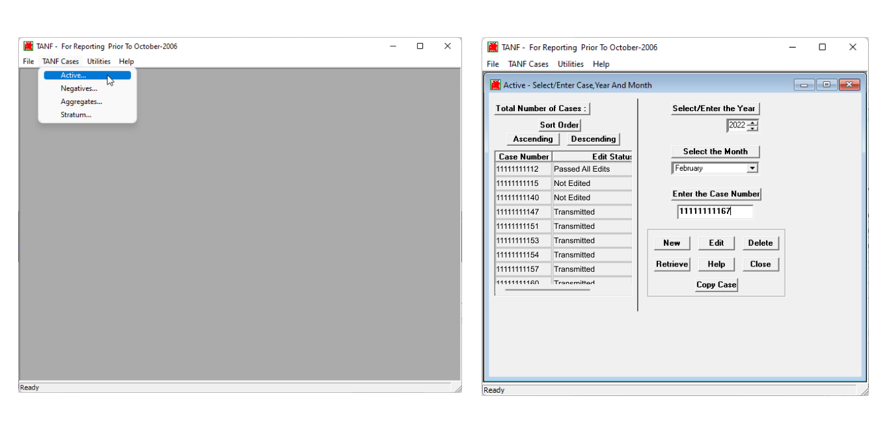
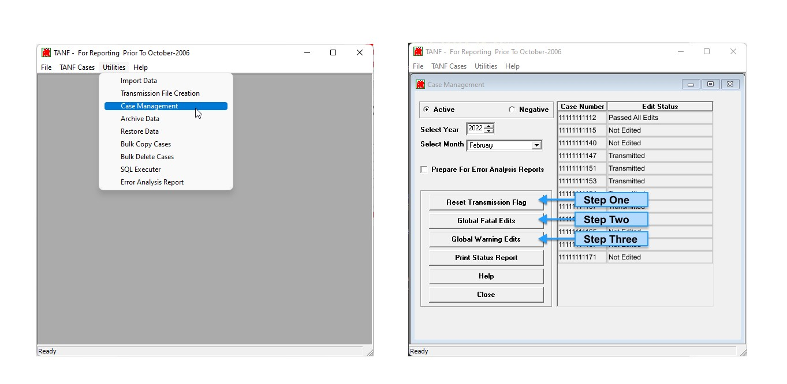
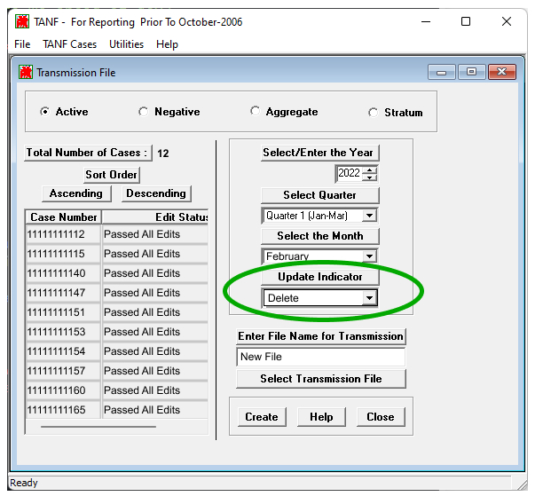

Exporting Complete Data Using FTANF
This guide aims to provide tips for those currently using FTANF.exe to aid in the process of transitioning from resubmitting partial data files to resubmitting complete ones.
What is FTANF.exe?
FTANF.exe—sometimes known just as ‘FTANF’, ‘pTANF’, or ‘the executables’—is a legacy desktop application tool that helps TANF grantees prepare transmission files for all sections of their quarterly data report. Data can be imported from other systems or entered manually and – once in the tool – could be exported into the transmission-ready flatfile (.txt) format. Though FTANF is no longer supported, it’s still used by some grantees.
How to export complete data in FTANF.exe
Exporting that complete data via FTANF shouldn’t require any big changes to your resubmission workflow; the key change is to take a couple of additional steps to include both uncorrected and corrected records from the previously-transmitted file in the updated file. The steps to follow (and supporting screenshots) are included below:
-
Navigate to the “TANF Cases” tab, and complete your typical process for correcting data to records.
This will typically involve selecting the appropriate year, month, and case number to retrieve and making edits to fields that are associated with the edit code in your transmission email report.
 Active with a chosen year, month, and case number."> -
Navigate to the “Utilities” tab, and select the Case Management option to go through the process of checking all corrected + uncorrected records for the specified section and months have passed all checks for fatal and warning edits.
This process includes:
- Click “Reset transmission flag” button to get any cases that had previously been checked and transmitted into the “Passed all edits” status.
- Click the “Global Fatal Edits” button to check all records for fatal errors.
- Click the “Global Warning Edits” button to check all records for fatal errors. At the end of this step, all cases for the specified month should have an Edit Status of “Passed all edits”.
These steps should be repeated for each month in the quarterly Section 1 or Section 2 file.
 Case Management with Reset Transmission Flag, Global Fatal Edits, and Global Warning Edits, and annotated as steps 1, 2, and 3.">
-
Navigate to the “Utilities” tab, and select the Transmission File Creation option to go through the process of generating an updated transmission file for the section, year, and quarter, for which corrections to data were made.
One of the key attributes in this newly-generated file is the Update indicator which is part of the header record. This Indicator tells the legacy TANF system, TDRS (TANF Data Reporting System) whether a data file includes new (N-New) records, updated records that should be merged with existing data (U-Update), or records that should completely replace all previously-transmitted records for the section, year, and quarter (D-Delete).
To ensure that your data remains consistent between FTANF and TDP, please use the Delete value of the Update Indicator in all submissions. To confirm that the Delete value has been set correctly, you can look for the “D” value at the end of the Header Record of the file you’re submitting (emphasized below).
“HEADER20221A01000TAN1 D”
{kind=link}
{kind=link}
{kind=link}
How to get support or help exporting complete data from other systems
If you could use assistance making these changes to your data workflow—whether you use FTANF or any other data tool—we’d be more than happy to work with you directly.
Please reach out with any questions or concerns to tanfdata@acf.hhs.gov.